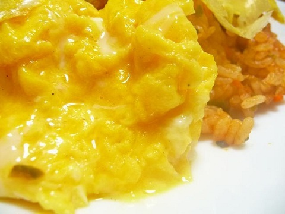
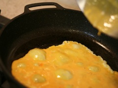

ふんわりオムライス
今日紹介するレシピはふんわりオムライスです。
とき卵に生クリームとマヨネーズを入れることで、ふわふわの美味しいオムレツができます！

材料一覧
| オムレツ部分 １人前分 |
| 卵 |
2個 |
| オリーブ油 |
大さじ1 |
| 生クリーム |
小さじ2 |
| マヨネーズ |
作り方
- 玉ねぎ・ニンジン・しいたけをみじん切りにする
- サラダ油を熱したフライパンで、鶏肉を炒める
- 火が通ったら、鶏肉を取り出し、玉ねぎ・ニンジン・しいたけを炒める
- 鶏肉・ご飯を入れ、さらに炒める
- 具材が混ざったら、ケチャップを大さじ３加え、むらなく赤くなるまで混ぜ合わせる
- 人数分の皿に盛りつける
- ボウルで卵・生クリーム・マヨネーズをよく混ぜる
- オリーブ油を熱したフライパンに入れ、素早くかき混ぜる
- 半熱の状態のままで火を止め、チキンライスの上に盛り付ける
ワンポイント

外側をふんわりとさせるためには、フライパンの油をよく熱してからとき卵をフライパンに入れるのがポイントです。
油がしっかりと熱せられていると写真のように気泡ができます。
卵をフライパンに入れた後は、火を止めるまで素早くかき混ぜましょう。
トップページへ戻る
このページのトップに戻る